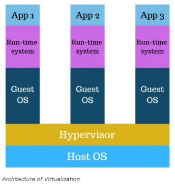

Virtualization is defined as the act of running a virtual instance of a computer system in a layer abstracted from the physical hardware. You can think of virtualization as running multiple operating systems in various virtual machines all coming from the same host. In the past a company would have three physical servers, one for mail, another for the web, and the last for internal legacy applications, each of the servers may be utilized only at 30% capacity. With the use of virtualization the company can use one server to split the load of all these tasks, which in turn would allow for the hardware to be used more efficiently. An example of the split of the load, before virtualization is implemented can be seen in the image below.
The utilization of virtualization prevents the user or company from needing extra hardware. A virtual computer system or a “virtual machine” is an isolated software container with an operating system and application inside. Each self-contained virtual machine is independent from the other. Allowing multiple virtual machines on a single computer allows for several operating systems and applications to run on a single server, or “host”. In between the virtual machine and the host is there a layer of software called the “hypervisor” which helps allocate the computing resources to each virtual machine. An example of an operating system leveraging virtualization can be seen below.
